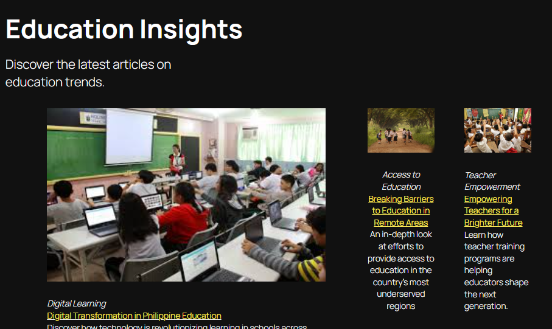

Pilipinas Ngayon — WordPress News Website
WordPress news site with organized categories and accessible layout.
A WordPress-based news website that groups posts across multiple categories with a clean design.
Built using Elementor and basic UI/UX principles to keep the content easy to scan and navigate.
Screenshots



What I Learned
- How to structure categories and content hierarchy for news sites.
- How to apply basic UI/UX principles in WordPress using Elementor.
- How to maintain readability and navigation clarity across devices.